IA local
Rodar IA no seu PC: motores, interfaces, imagem/vídeo e agentes locais.
39 links
| Vídeo | Projeto | O que faz | Pasta de origem | |
|---|---|---|---|---|
| Ollama: o que é e como configurar (primeiros pas |  | ollama/ollama | 186.8k★ · DeepSeek, Qwen e Gemma no seu PC com um comando. | curado — busca na internet |
 Como usar MTP no llama.cpp pra aumentar ABSURDAM Como usar MTP no llama.cpp pra aumentar ABSURDAM | ggml-org/llama.cpp | 134k★ · motor de inferência que roda até em notebook. | curado — busca na internet | |
| Como Rodar IA na GPU com VLLM |  | vllm-project/vllm | 96.8k★ · servidor de inferência rápido (o padrão em GPU). | curado — busca na internet |
 How to Fine-Tune an AI Model Locally with Unslot How to Fine-Tune an AI Model Locally with Unslot |  | unslothai/unsloth | 79k★ · treina e roda LLM local (GGUF/MLX), 2× mais rápido. | curado — busca na internet |
 IA Grátis no seu PC | Ollama, LM Studio, GPT4All IA Grátis no seu PC | Ollama, LM Studio, GPT4All |  | nomic-ai/gpt4all | 77k★ · roda LLM local em qualquer máquina (app pronto). | curado — busca na internet |
 LocalAI Tutorial - Run Any AI Model Locally (No LocalAI Tutorial - Run Any AI Model Locally (No | 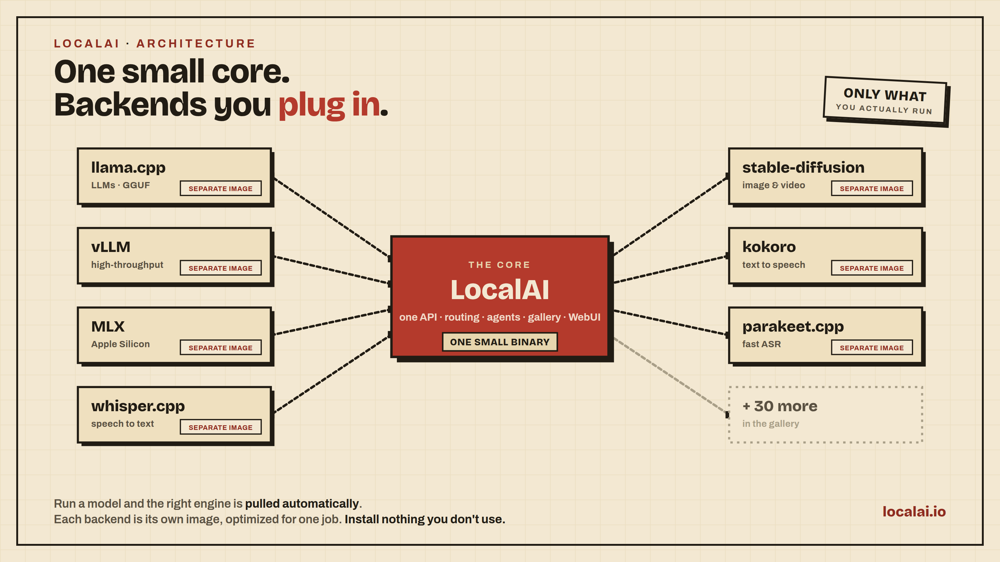 | mudler/LocalAI | 50k★ · engine local para LLM, visão, voz e imagem. | curado — busca na internet |
 Tutorial - Rode QUALQUER LLM com TextGen WebUI Tutorial - Rode QUALQUER LLM com TextGen WebUI |  | oobabooga/textgen | 47.7k★ · app desktop local para LLM (texto, visão, ferramentas). | curado — busca na internet |
 ✅TURISTA PORTUGUÊS VIRALIZA AO NARRAR ASSALTO NO ✅TURISTA PORTUGUÊS VIRALIZA AO NARRAR ASSALTO NO | 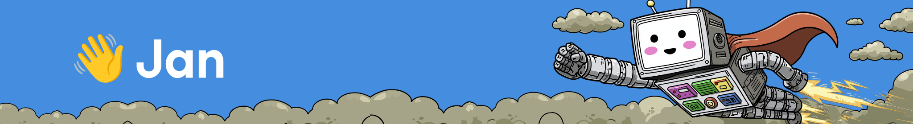 | janhq/jan | 45.7k★ · alternativa ao ChatGPT que roda sem internet. | curado — busca na internet |
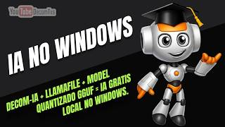 DECOM IA + LLAMAFILE + MODEL QUANTIZADO GGUF = I |  | mozilla-ai/llamafile | 26.6k★ · modelo + motor num arquivo só, executa sem instalar nada. | curado — busca na internet |
| KOBOLDCPP - Sua IA local simples e facil. | sem print | LostRuins/koboldcpp | 12.3k★ · roda GGUF com interface simples (o clássico do pessoal). | curado — busca na internet |
 Execute modelos de IA localmente com llama.cpp Execute modelos de IA localmente com llama.cpp |  | withcatai/node-llama-cpp | 2.2k★ · llama.cpp com bindings para Node.js. | curado — busca na internet |
 Hospedei uma IA no meu Servidor: O Poder do Olla Hospedei uma IA no meu Servidor: O Poder do Olla |  | open-webui/open-webui | 158.5k★ · interface estilo ChatGPT ligada em modelos locais. | curado — busca na internet |
 Nova IA que SUPERA o Chat?| LobeHub Nova IA que SUPERA o Chat?| LobeHub |  | lobehub/lobehub | 85k★ · “super-agentes” com tarefas, horários e relatórios. | curado — busca na internet |
 Aula 38 - Como criar um Assistente de IA usando Aula 38 - Como criar um Assistente de IA usando |  | Mintplex-Labs/anything-llm | 68k★ · conversa com PDFs e planilhas sem mandar pra fora. | curado — busca na internet |
 LibreChat: Configurando seu próprio hub de IAs LibreChat: Configurando seu próprio hub de IAs |  | LibreChat-AI/LibreChat | 47k★ · todos os modelos numa tela só, hospedada por você. | curado — busca na internet |
| Khoj.dev - Descubra o Poder do Desenvolvimento d |  | khoj-ai/khoj | 38k★ · “segundo cérebro” com seus documentos, self-hosted. | curado — busca na internet |
| SillyTavern - Introdução, instalação e Interface |  | SillyTavern/SillyTavern | 35.6k★ · interface de chat com personagens (roleplay local). | curado — busca na internet |
| Chatbot do ZERO com Next, AI SDK, OpenAI e Shadc | 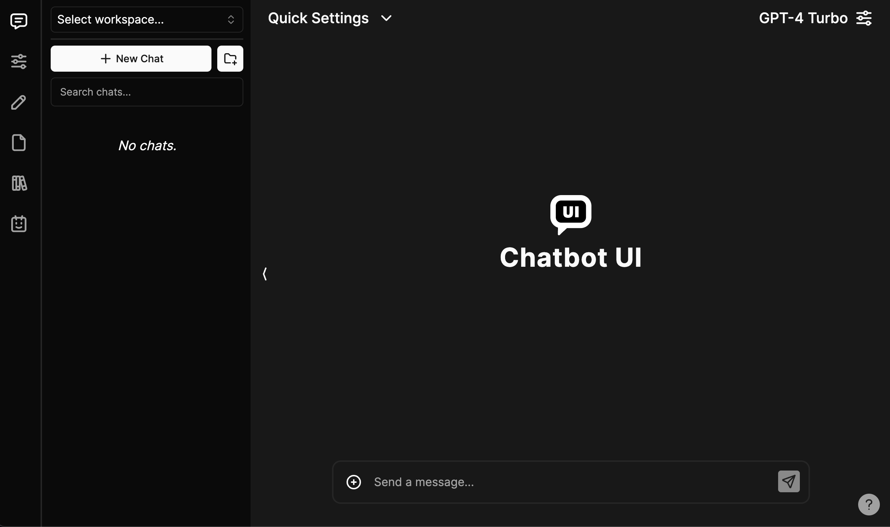 | mckaywrigley/chatbot-ui | 33.3k★ · clone do ChatGPT para os seus modelos. | curado — busca na internet |
| Gerar Vídeos 100% Grátis ficou ainda melhor - Wa | 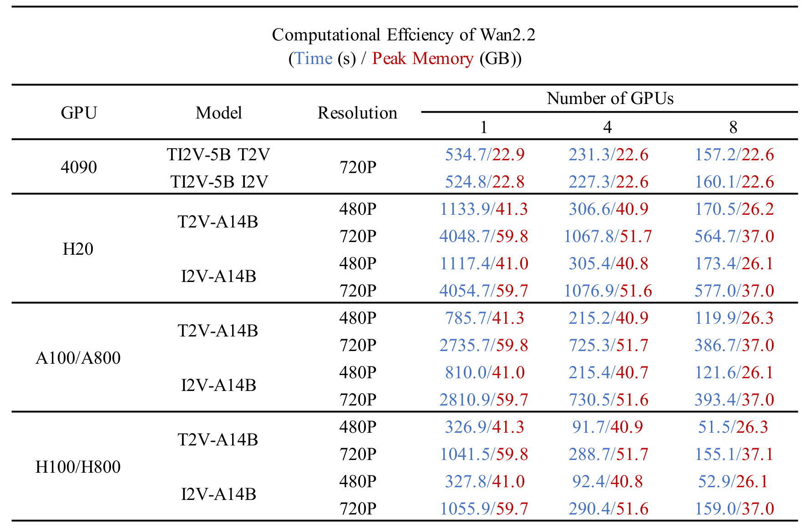 | Wan-Video/Wan2.2 | 18.6k★ · modelo de vídeo da Alibaba: texto→vídeo e imagem→vídeo até 720p. | curado — busca na internet |
| Animate Anyone tutorial | Animate anyone ai | 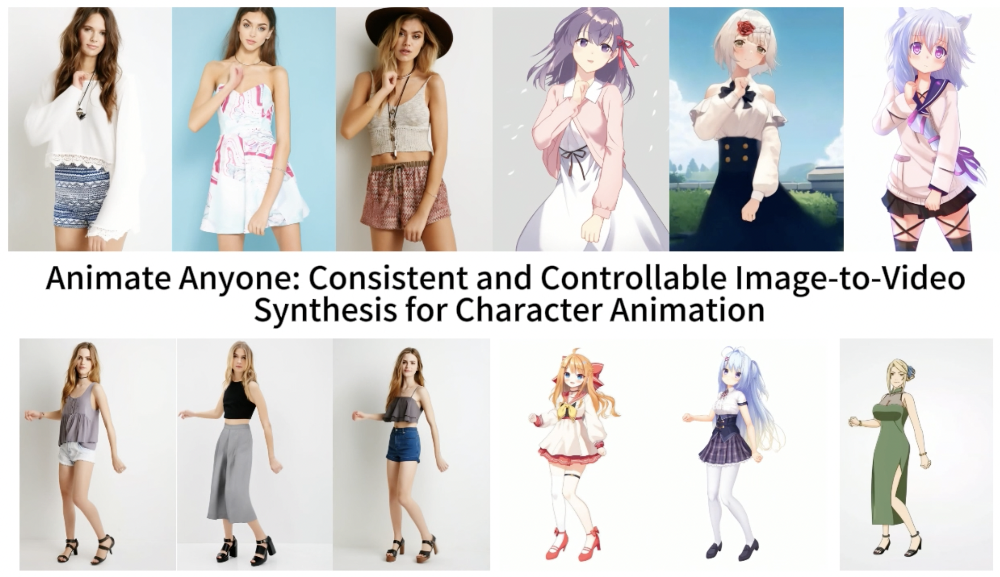 | HumanAIGC/AnimateAnyone | 14.8k★ · anima uma pessoa a partir de uma foto (imagem→vídeo). | curado — busca na internet |
| GUIA COMPLETO para usar COGVIDEO (COGVIDEOX) loc | 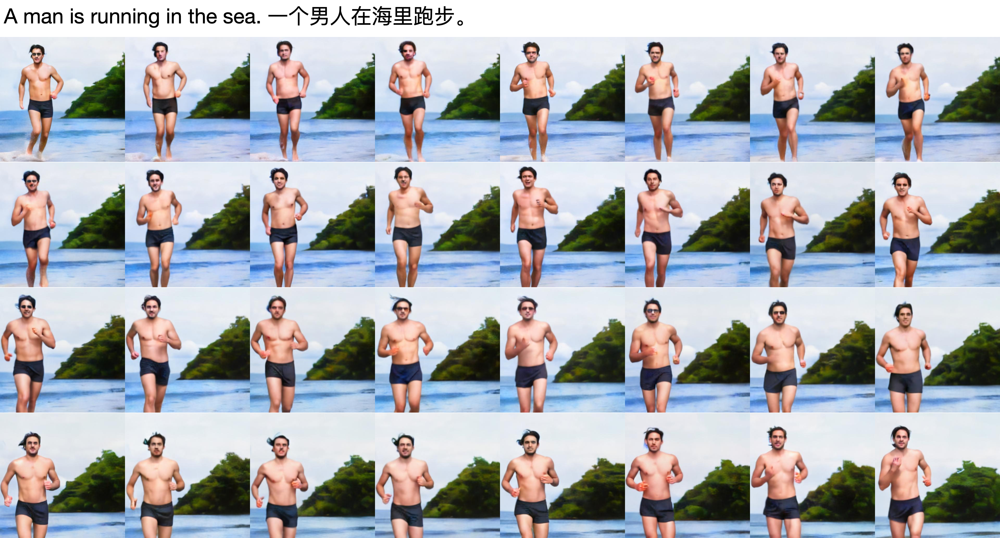 | zai-org/CogVideo | 13.2k★ · texto e imagem para vídeo (CogVideoX). | curado — busca na internet |
| 100% GRÁTIS: NOVA IA Chinesa Cria VÍDEOS e IMAGE | 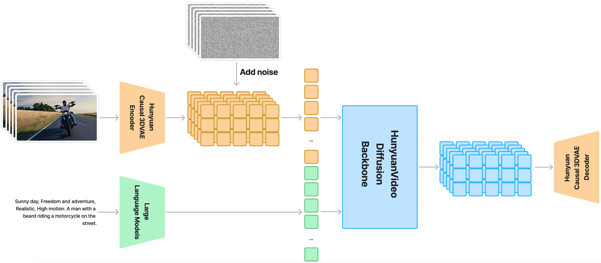 | Tencent-Hunyuan/HunyuanVideo | 12.8k★ · framework grande de geração de vídeo (Tencent). | curado — busca na internet |
| 🔥Atualizou! Nova IA de vídeo LTX-2.3 liberada Gr | 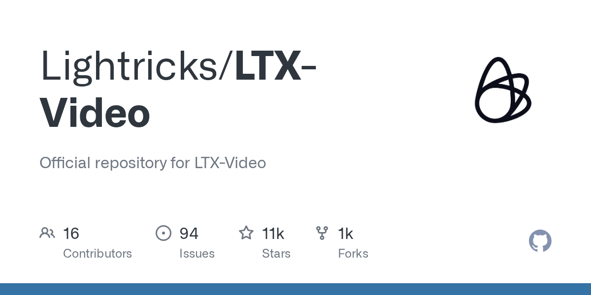 | Lightricks/LTX-Video | 11.4k★ · vídeo rápido em tempo quase real (LTX). | curado — busca na internet |
| 🚨 SURREAL! IA DE IMAGEM GRÁTIS SUPEROU O NANO B | 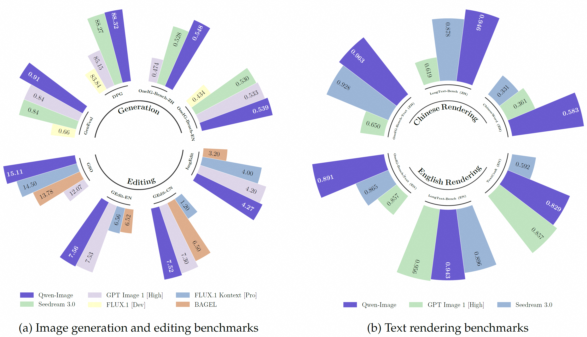 | QwenLM/Qwen-Image | 8.5k★ · modelo base de geração de imagem do Qwen. | curado — busca na internet |
| 🚨 SURREAL! IA DE IMAGEM GRÁTIS SUPEROU O NANO B | 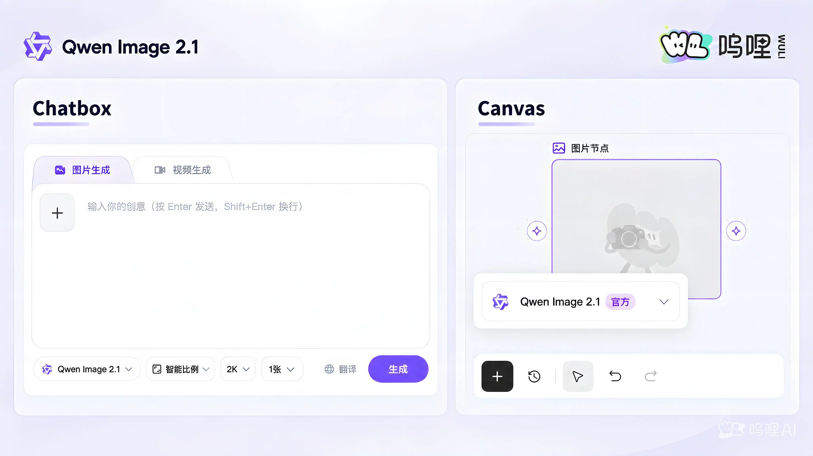 | QwenLM/Qwen-Image-2.1 | 2.2k★ · geração + edição de imagem, compacto (7B). | curado — busca na internet |
| MOCHI | Mochi fácil com 3 ingredientes no microo | sem print | genmoai/mochi | 3.8k★ · modelo de vídeo open-source da Genmo. | curado — busca na internet |
| Como configurar e usar o vgen? | sem print | ali-vilab/VGen | 3.2k★ · ecossistema de geração de vídeo (texto, imagem e edição). | curado — busca na internet |
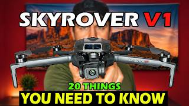 Análise do Skyrover V1 - NÃO COMPRE antes de ass | SkyworkAI/SkyReels-V1 | 2.7k★ · modelo de vídeo focado em pessoas. | curado — busca na internet | |
| TUTORIAL: Como usar o CLAUDE AI? | IAs Generativ | 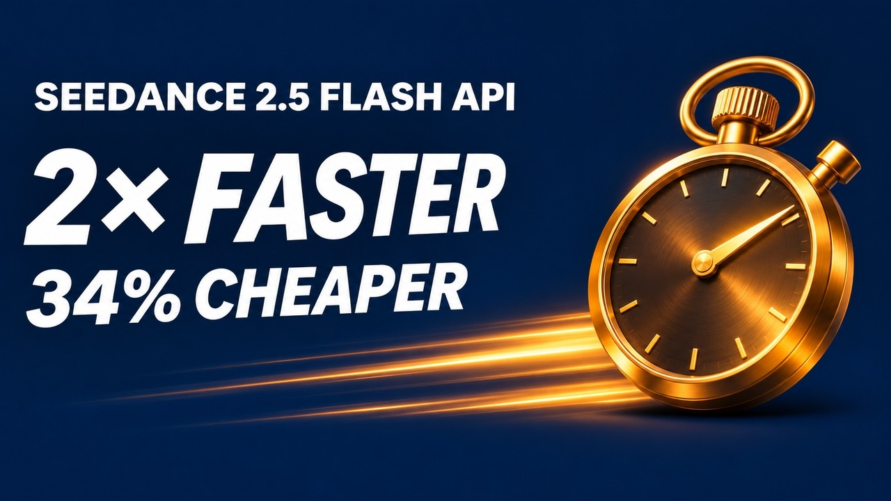 | Anil-matcha/Open-Generative-AI | 34.3k★ · alternativa sem filtro às plataformas de imagem/vídeo. | curado — busca na internet |
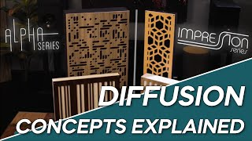 Conceitos de DIFUSÃO explicados - Como funcionam | 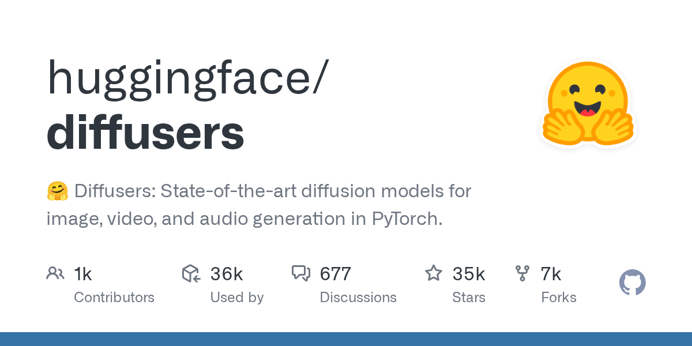 | huggingface/diffusers | 34.9k★ · biblioteca que roda os modelos de imagem, vídeo e áudio. | curado — busca na internet |
 Como instalar e usar o Stable Diffusion em 6 min Como instalar e usar o Stable Diffusion em 6 min | 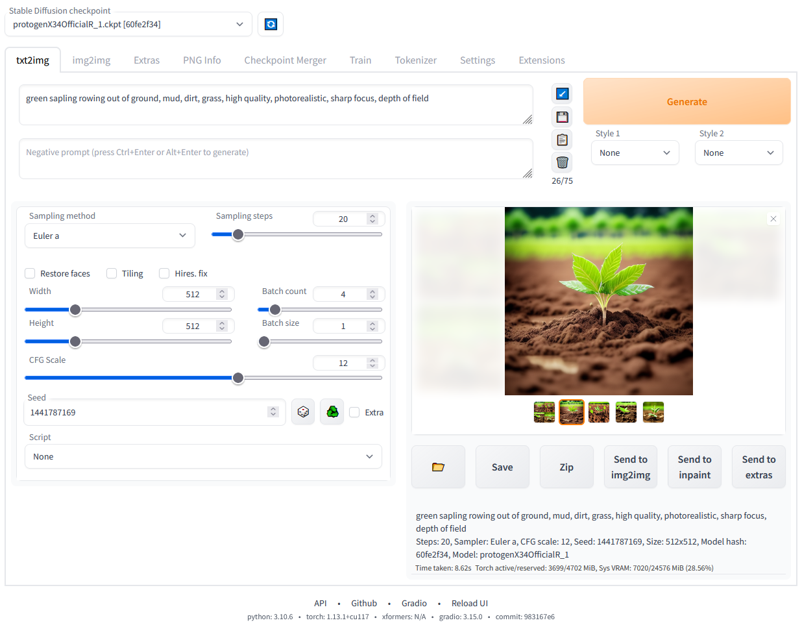 | AUTOMATIC1111/stable-diffusion-webui | 165.3k★ · a interface mais conhecida para gerar imagens no PC. | curado — busca na internet |
 Comfyui para iniciantes: tudo o que você precisa Comfyui para iniciantes: tudo o que você precisa |  | Comfy-Org/ComfyUI | 146.5k★ · imagem e vídeo por nós, rodando local. | curado — busca na internet |
 Baixar e Instalar a Fooocus AI - inteligência ar Baixar e Instalar a Fooocus AI - inteligência ar |  | Lllyasviel/Fooocus | 53.9k★ · imagens com IA sem mexer em mil configurações. | curado — busca na internet |
| Invoke AI - Come Installare Invoke AI (tutorial) | 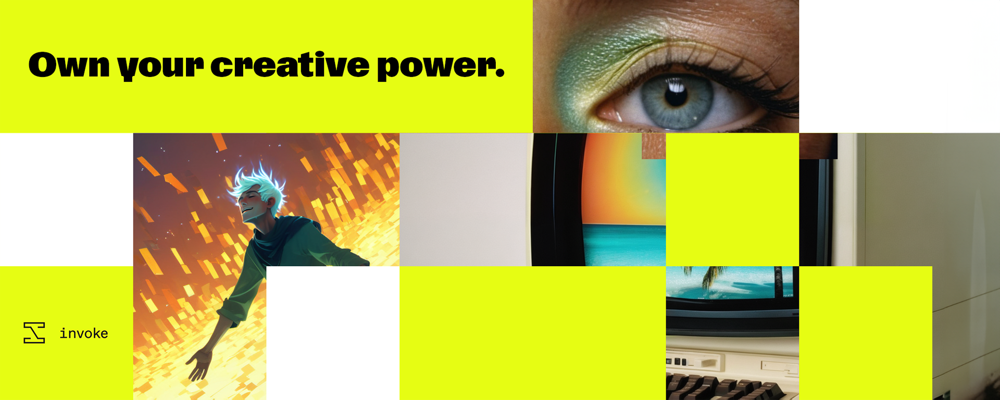 | invoke-ai/InvokeAI | 29k★ · studio de imagem local com canvas e inpainting. | curado — busca na internet |
 Como instalar o Qwen 3.8 - IA SEM CENSURA LOCAL, Como instalar o Qwen 3.8 - IA SEM CENSURA LOCAL, |  | PurpleDoubleD/locally-uncensored | 4k★ · estúdio local: chat, imagem e vídeo sem filtro. | PROGRAMAÇÂO IA AGENT / GITHUBS / VARIADOS |
| AgenticSeek: Alternativa ao Manus TOTALMENTE GRA |  | Fosowl/agenticSeek | 27.7k★ · agente autônomo 100% local (sem API, sem mensalidade). | curado — busca na internet |
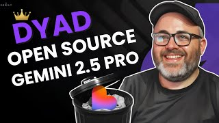 DYAD É A Plataforma GRATUITA MAIS PODEROSA Para |  | dyad-sh/dyad | 22.3k★ · construtor de apps com IA local (tipo Lovable/Replit). | curado — busca na internet |
| [BASIC] Adicionando o KUN Basic ao Aliemination |  | KunAgent/Kun | 6.4k★ · workspace de agente local para código, escrita e pesquisa. | curado — busca na internet |
 ATOMIC CHAT - IA LOCAL GRATUITA E PRIVADA ATOMIC CHAT - IA LOCAL GRATUITA E PRIVADA |  | AtomicBot-ai/Atomic-Chat | 2k★ · app local com motor de inferência próprio. | curado — busca na internet |
| A 'NOVA' ComfyUI humilhou o Higgsfield (e é de graça) | 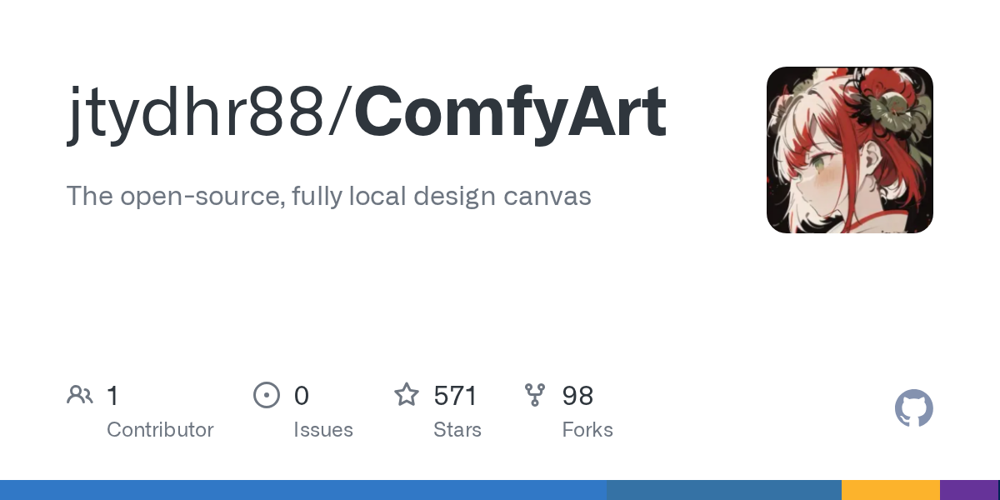 | jtydhr88/ComfyArt | Canvas de design 100% local (estilo Figma) ligado no ComfyUI. | curado — busca na internet |
| A 'NOVA' ComfyUI humilhou o Higgsfield (e é de graça) | 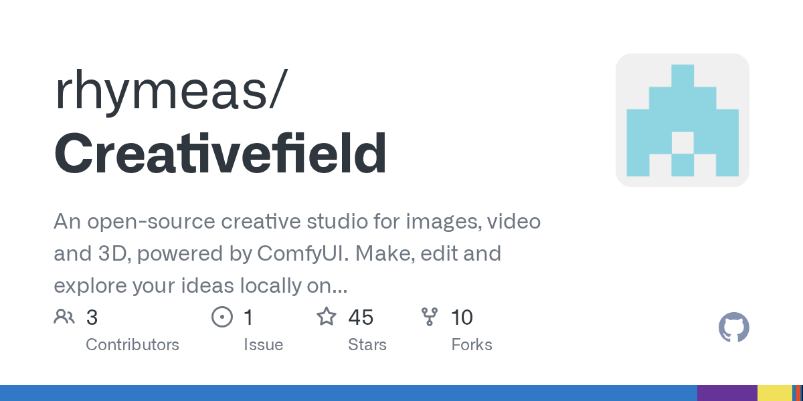 | rhymeas/Creativefield | Estúdio criativo de imagem, vídeo e 3D em cima do ComfyUI. | curado — busca na internet |
| A 'NOVA' ComfyUI humilhou o Higgsfield (e é de graça) | 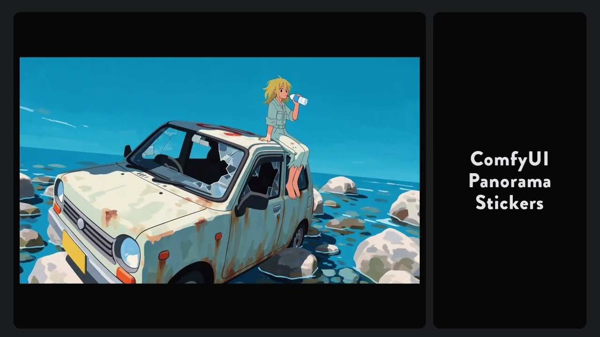 | nomadoor/ComfyUI-Panorama-Stickers | Nós do ComfyUI para colocar imagens, vídeos e 3D dentro de um panorama 360°, tirar a foto de qualquer ângulo e devolver o resultado pro lugar — tudo no mesmo workflow. | curado — busca na internet |